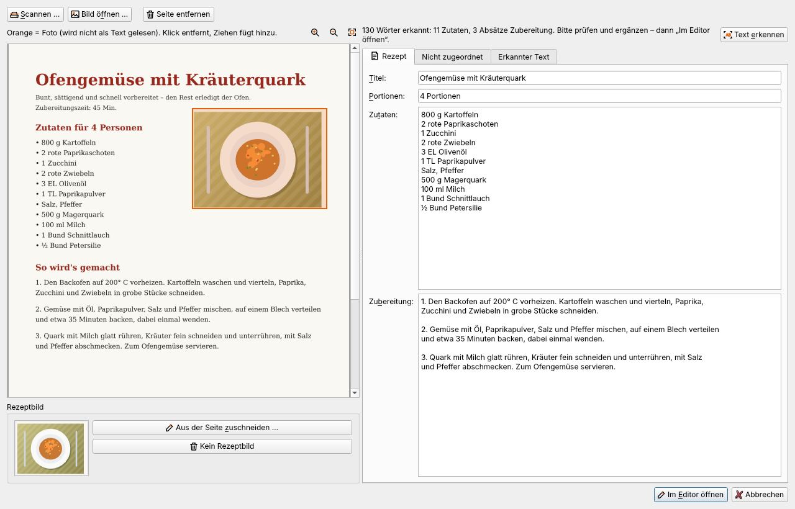
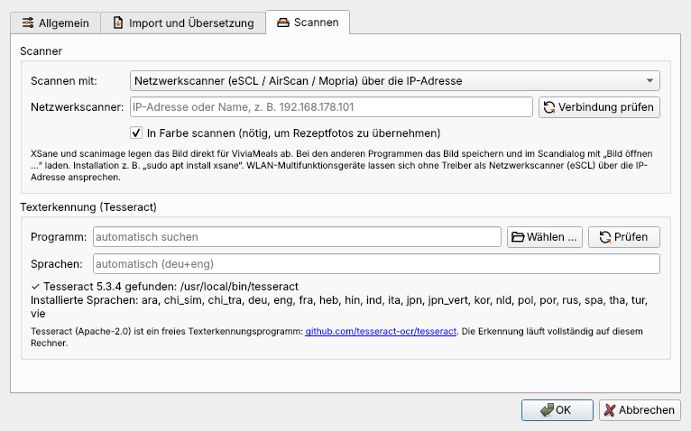
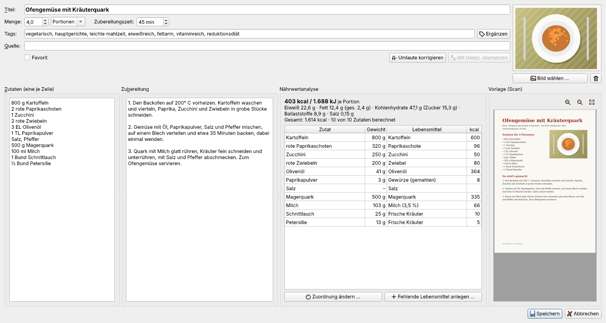

Rezepte scannen
Rezepte aus Kochbüchern, Zeitschriften oder von Karteikarten lassen sich einscannen oder mit dem Handy fotografieren. ViviaMeals liest den Text mit dem freien Programm Tesseract – vollständig auf dem eigenen Rechner –, teilt ihn in Titel, Portionen, Zutaten und Zubereitung auf und öffnet das Ergebnis im Rezepteditor.

Was man braucht
Tesseract mit deutschen Sprachdaten:
- Windows: Installer der UB Mannheim (https://github.com/UB-Mannheim/tesseract/wiki), bei „Additional language data“ German ankreuzen. Manche ViviaMeals-Installer bringen Tesseract schon mit.
- Linux:
sudo apt install tesseract-ocr tesseract-ocr-deu(Fedora:tesseract tesseract-langpack-deu). - macOS:
brew install tesseract tesseract-lang.
Extras → Einstellungen → Scannen → Prüfen zeigt, ob Tesseract gefunden wurde und welche Sprachen installiert sind.
Zum Scannen (sonst einfach ein Bild oder Foto öffnen):
| System | Möglichkeit |
|---|---|
| Windows | der Scandialog von Windows (WIA) – jeder Scanner mit WIA-Treiber funktioniert |
| Linux | XSane (sudo apt install xsane); ohne Oberfläche scanimage |
| macOS | „Digitale Bilder“ oder Vorschau – Bild speichern und mit „Bild öffnen …“ laden |
| überall | Netzwerkscanner (eSCL/AirScan), Programm des Herstellers mit überwachtem Ordner oder ein eigener Befehl |

Netzwerkscanner (eSCL)
Die meisten WLAN-Multifunktionsgeräte (Epson, HP, Canon, Brother …) verstehen das offene Protokoll eSCL (auch AirScan oder Mopria genannt). Unter Extras → Einstellungen → Scannen „Netzwerkscanner“ wählen, die IP-Adresse des Geräts eintragen und Verbindung prüfen. Ein Treiber ist nicht nötig. Die IP-Adresse steht im Netzwerkstatus-Ausdruck des Druckers oder in der Geräteliste des Routers.
Tipp: Geben Sie dem Drucker im Router immer dieselbe IP-Adresse, damit die Einstellung dauerhaft passt.
Programm des Herstellers
Mit Programmen wie Epson ScanSmart, HP Smart oder Canon IJ Scan Utility wählen Sie „Überwachter Ordner“: den Ordner, in dem das Programm die Scans ablegt, und optional das Programm selbst. Scannen … startet es; jedes neue Bild im Ordner übernimmt ViviaMeals automatisch.
Ablauf
- Datei → Import → Rezept scannen … (Strg+Umschalt+S) – oder Rezept aus Bild oder Foto erkennen ….
- Seite scannen bzw. Bild öffnen. Fotos auf der Seite werden orange markiert und beim Lesen ausgelassen. Eine falsche Markierung entfernt ein Klick; ein nicht erkanntes Foto ziehen Sie mit der Maus auf. Danach Text erkennen.
- Das größte Foto wird als Rezeptbild vorgeschlagen. „Aus der Seite zuschneiden …“ wählt einen anderen Ausschnitt, „Kein Rezeptbild“ verwirft es.
- Rechts Titel, Portionen, Zutaten und Zubereitung prüfen. Was nicht zugeordnet werden konnte, steht im Reiter „Nicht zugeordnet“, der vollständige Text unter „Erkannter Text“.
- Mehrseitige Rezepte: weitere Seiten scannen oder öffnen – sie werden angehängt.
- Im Editor öffnen: Der Editor zeigt den Scan rechts als Vorlage (zoombar mit Strg+Mausrad). Nach Speichern steht das Rezept in der Datenbank; der Scan selbst wird nicht gespeichert.

Tipps für gute Ergebnisse
- Mit 300 dpi scannen; in Farbe nur, wenn das Foto mit übernommen werden soll.
- Handyfotos: Seite flach hinlegen, gerade von oben, ohne Schatten und bei gutem Licht.
- Typische Lesefehler verbessert ViviaMeals selbst: „l/2“ → ½, „1OO g“ → 100 g, „El“ → EL, „180 *C“ → 180° C, „Krauterquark“ → „Kräuterquark“.
- Handschrift erkennt Tesseract kaum.
- Zwei Rezepte auf einer Seite werden als eines erkannt – überzählige Zeilen im Editor löschen oder die Seite für das zweite Rezept erneut öffnen.
„Es wurde kein Scanner gefunden“ (Windows)
Der Windows-Scandialog zeigt nur Scanner, die Windows selbst eingerichtet hat. WLAN-Drucker, die nur mit dem Herstellerprogramm scannen, fehlen dort oft. Abhilfe:
- In ViviaMeals „Netzwerkscanner (eSCL)“ mit der IP-Adresse des Druckers wählen (empfohlen).
- „Überwachter Ordner“ mit dem Programm des Herstellers wählen.
- Den Drucker unter Windows-Einstellungen → Bluetooth & Geräte → Drucker & Scanner als Scanner hinzufügen. Erscheint er in der App „Windows-Scan“, findet ihn auch ViviaMeals.